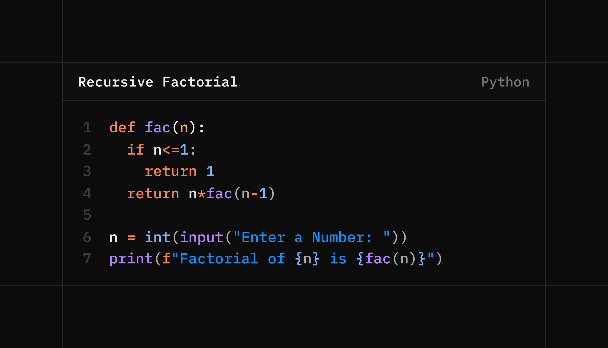

.png) View on GitHub
- Git Repo with LogicLens source code along with GitPages Hosting (under development)
View on GitHub
- Git Repo with LogicLens source code along with GitPages Hosting (under development)
With the rapid growth of online coding platforms and automated evaluations, identifying logically similar program submissions has become increasingly challenging. Many solutions solve the same problem using identical logic but appear different due to changes in variable names, formatting, or minor syntactic variations. Traditional text-based comparison methods often fail to capture such similarities accurately.
This project proposes LogicLens, a structure-aware code similarity detection system designed to identify logical resemblance between Python programs without relying on machine learning techniques. Instead of comparing raw source code, the system first converts programs into simplified token sequences that represent the underlying logic, removing superficial differences while preserving program structure.
To efficiently detect similarities, the system uses a combination of classical data structures and algorithms. Rolling Hash techniques are applied for fast initial similarity checks, allowing the system to filter out unrelated programs quickly. For deeper structural comparison, the Longest Common Subsequence (LCS) algorithm is used to measure how closely two programs align in terms of logical flow. Additionally, a Trie-based indexing mechanism helps identify reused logical fragments across multiple submissions.
By relying entirely on deterministic algorithms and well-established data structures, LogicLens ensures transparent, interpretable, and efficient similarity detection. The system demonstrates how core concepts from Data Structures and Algorithms can be applied to solve real-world problems such as academic integrity enforcement and automated code analysis.
Code Similarity Detection, Data Structures, Rolling Hash, Longest Common Subsequence, Trie, Python Program Analysis
View on GitHub
- Git Repo with LogicLens source code along with GitPages Hosting (under development)